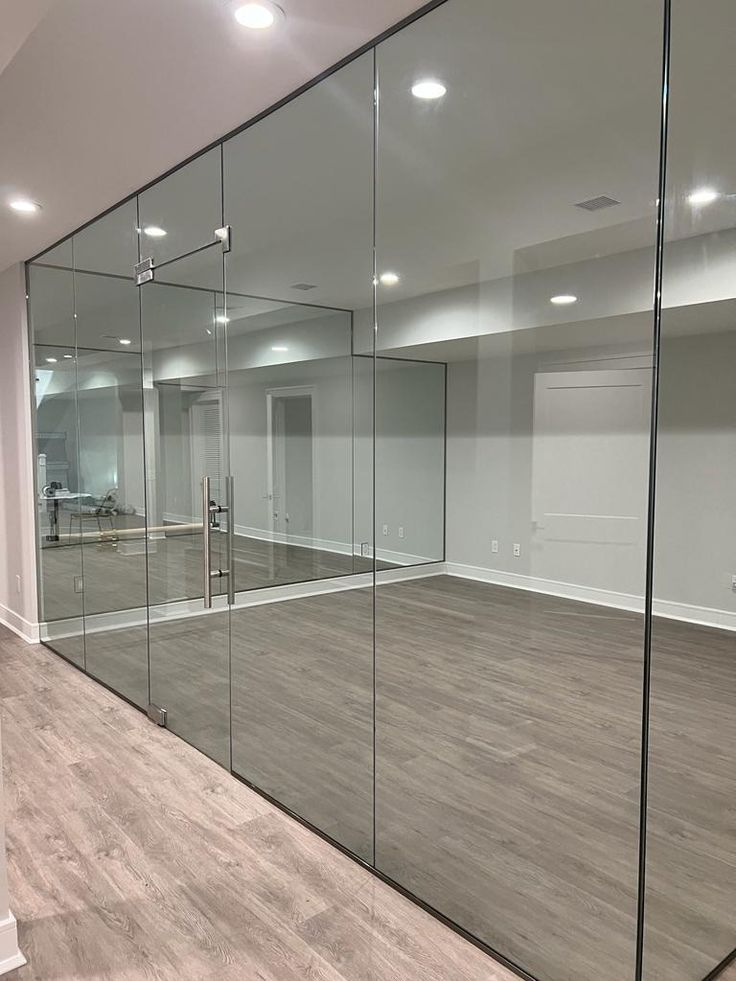
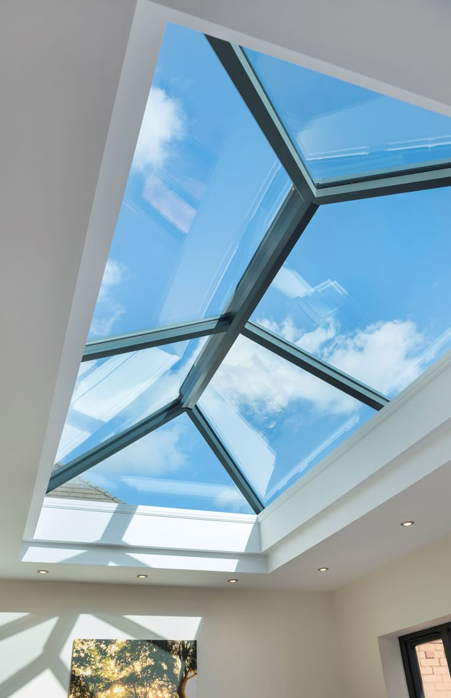
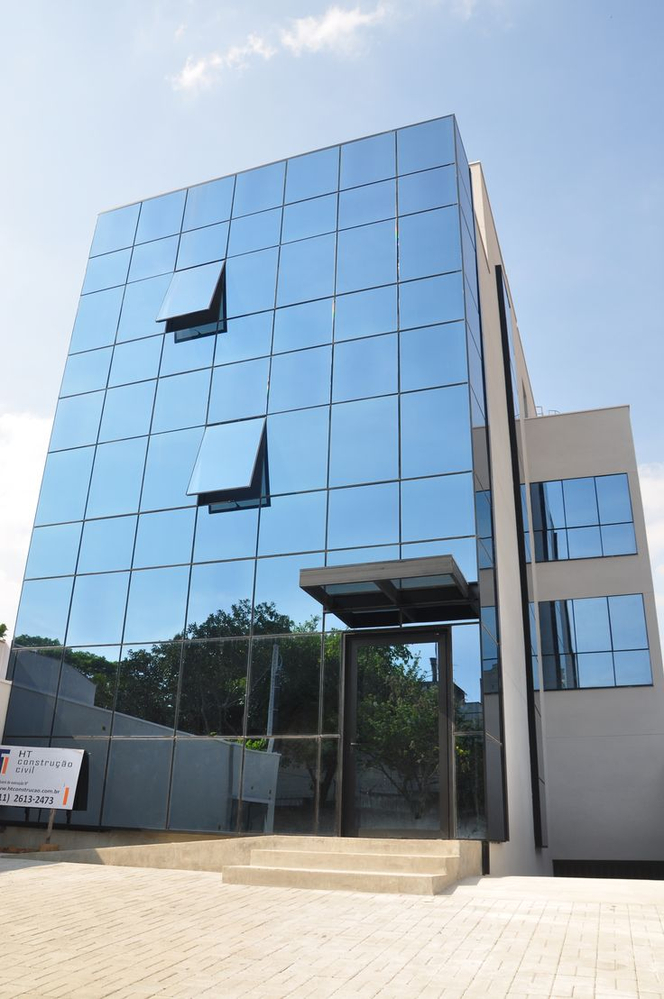
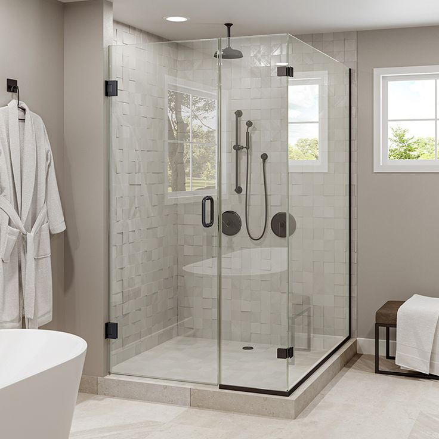
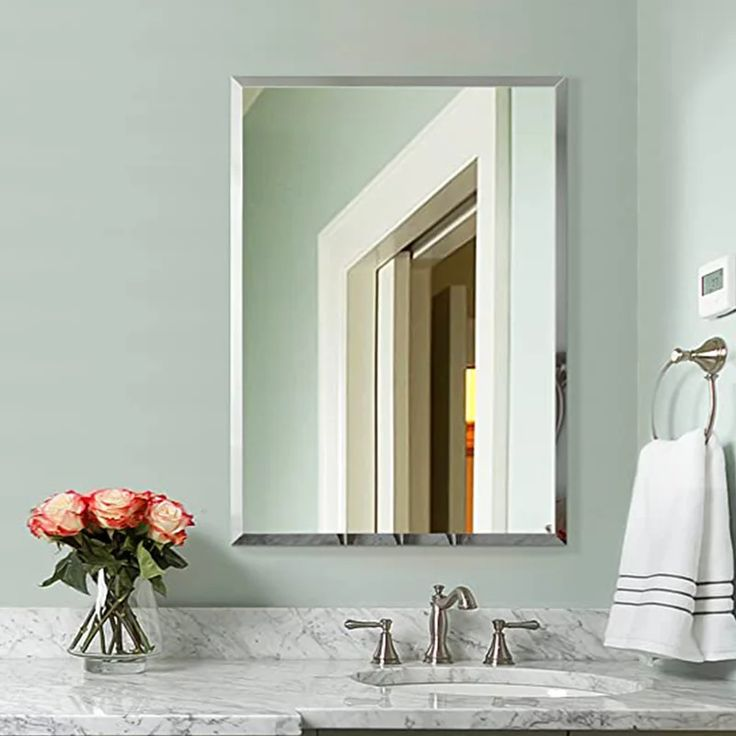
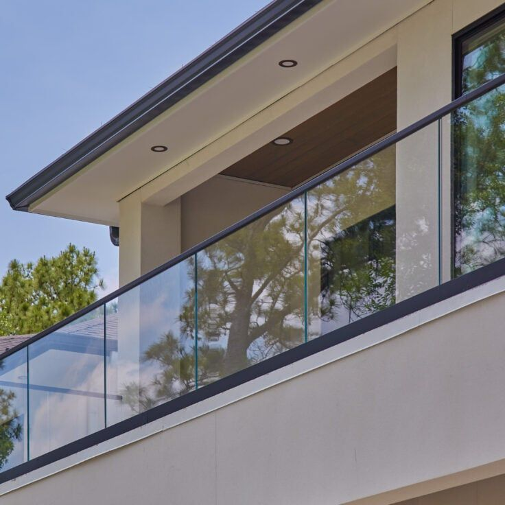

Premium glazing and aluminium solutions for architectural excellence
At Tensorgrid Ltd, we deliver high-quality glazing and aluminium solutions tailored to modern architectural and interior design needs. Our projects combine precision workmanship, durable materials, and functional aesthetics to create spaces that are practical, elegant, and long-lasting.
From commercial developments to residential installations, we provide complete solutions — from design support and fabrication to professional installation and finishing.
Modern skylight systems that enhance natural lighting, energy efficiency and architectural appeal.
Sleek facades with improved light penetration, structural performance, and weather protection.
Stylish and functional shower solutions for residential and commercial bathrooms.
Flexible workspace partitioning designed for light, space efficiency, and modern interiors.
Strong, durable fittings for glazing and architectural installations.
Secure glass fixing, proper sealing, and smooth finishing for long-lasting glazing.
Precision mirror installation for residential, commercial, and decorative use.

Project Type: Office Partitions
Location: Kisumu, Kenya
Description: Complete glass partition installation across 3 floors, incorporating soundproof glass for conference rooms and clear glass for open workspace areas. Enhanced natural lighting while maintaining privacy and flexibility.
Features: Frameless glass, acoustic performance, modern aesthetics

Project Type: Skylight Installation
Location: Karen, Nairobi
Description: Large-scale skylight system installation to maximize natural lighting in a modern villa. Custom-designed with energy-efficient toughened glass and weather-sealed frames.
Features: Energy efficiency, weather resistant, seamless integration

Project Type: Curtain Walling Systems
Location: High-Rise Office Tower
Description: Extensive curtain walling system for a 12-story commercial building facade. Integrated aluminium framing with high-performance glazing for superior thermal and weather performance.
Features: Weather protection, thermal efficiency, modern facade

Project Type: Shower Cubicles
Location: Mombasa, Kenya
Description: Custom frameless shower cubicles for 80+ luxury hotel bathrooms. Featuring frosted glass for privacy, sophisticated chrome fittings, and premium installation finishing.
Features: Frameless design, frosted glass, luxury finishes

Project Type: Mirror Installation
Location: Kitengela, Kajiado
Description: Full-wall mirror installations in dressing rooms and sales floors. High-quality reflective glass with precision mounting for retail aesthetic appeal.
Features: High-quality reflective glass, secure mounting, sleek appearance

Project Type: Balustrades & Glass Railings
Location: Kitusuru, Nairobi
Description: Frameless glass balustrade installation across the residential unit balconies. Toughened glass panels with stainless steel hardware ensuring safety and elegant views.
Features: Frameless glass, safety certified, unobstructed views